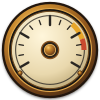
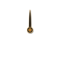

NOMAD Betting Outlook · Day 1104 Sep 2026 · Human reviewed
Positive trend continues, but the previous high is still being tested.
NOMADTIPS3 remains in positive territory. The current structure is constructive, but 11 days is still an early sample. Today's view is selective participation — not increased risk.
System dataDay 11
NOMADTIPS3 Performance · Day 11Current equity remains positive while the system tests its previous performance high.
Current Result+9.37u
TrendPositive
Performance PhaseTesting High
NOMAD ViewFOLLOW SMALL
Market View
The system is holding a higher profit zone.
The recent curve recovered from earlier drawdown, established a higher base and returned to the upper profit range. That is constructive behavior.
A repeated test of the previous high is not the same as a confirmed breakout. More settled results and more operating time are needed before any durable long-term edge can be treated as established.
Good form is a reason to stay disciplined — not a reason to increase risk.
Our View
Cautiously Positive
FOLLOW SMALL


DEFENDWAITFOLLOW SMALLFOLLOWSTRONG
Follow qualified NOMAD signals only. Keep stake size consistent. Do not force action because the curve is positive.
Risk Outlook
MODERATE
Track Record
11 Days
Long-Term Validation
Not Yet
Current Trend
Positive
Stake Increase
Not Recommended
Today's Approach
Stay selective.
✓
Fixed stake sizingUse the same planned unit size across qualified signals.
✓
Follow the filterIf NOMAD does not qualify the match, no action is required.
✓
Accept varianceShort losing runs can occur during a positive period.
What Changes Our View?
The rating moves only when the evidence changes.
POSITIVE PATH
NEW HIGH→PROFIT BASE HOLDS→MORE SETTLED RESULTS→FOLLOW
WIN → Maintain stakeDo not increase exposure simply because recent results are positive.
2
LOSS → Maintain stakeDo not chase losses or use recovery staking.
3
NO SIGNAL → No betSkipping a match is part of the system.
Early Validation
11 days is a start — not proof.
Current performance is positive, but a short operating period cannot demonstrate a durable long-term edge by itself.
Future views should consider settled bets, total units, ROI, maximum drawdown and operating period — not a single winning run.
Bottom Line
NO SIGNAL. NO BET. KEEP YOUR MONEY.
NOMAD is designed to filter opportunities, not create unnecessary bets. Missing a bet costs nothing. Forcing one can.
Protect the bankroll. Wait for the right signal. Let the system do the filtering.
Betting involves financial risk. Past performance does not guarantee future results. Never stake more than you can afford to lose, and do not use money needed for essential expenses. This is an informational, human-reviewed NOMAD view — not a guarantee of profit.